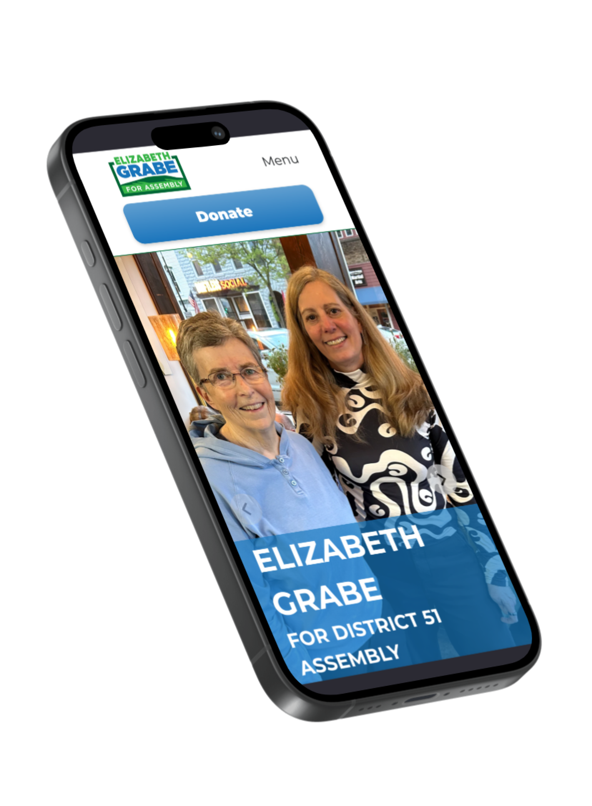
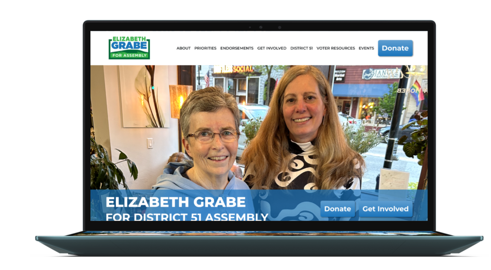
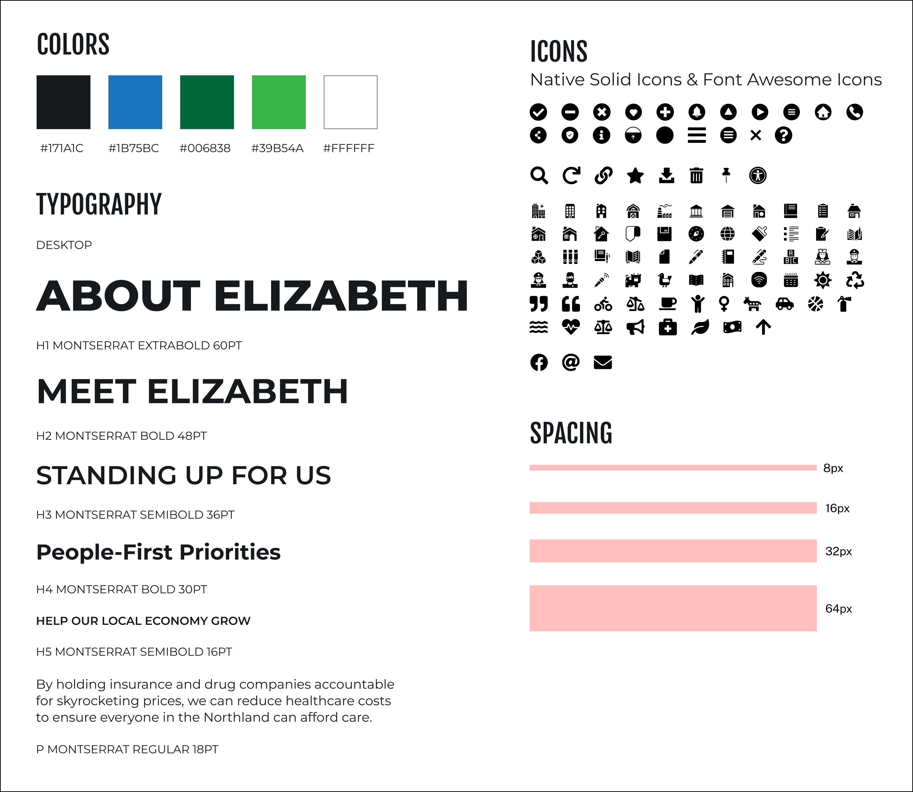
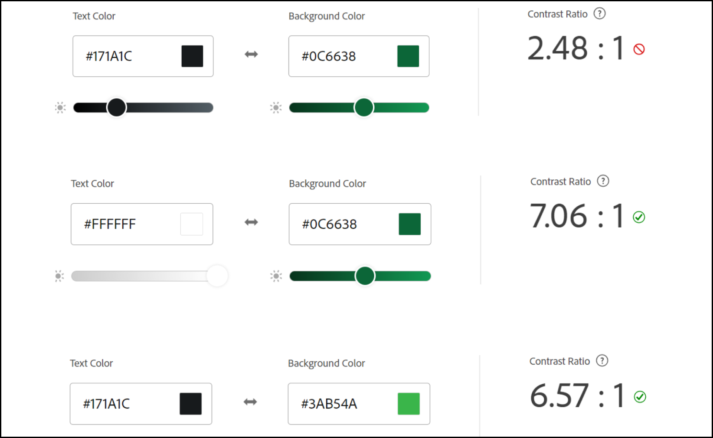
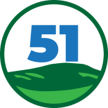
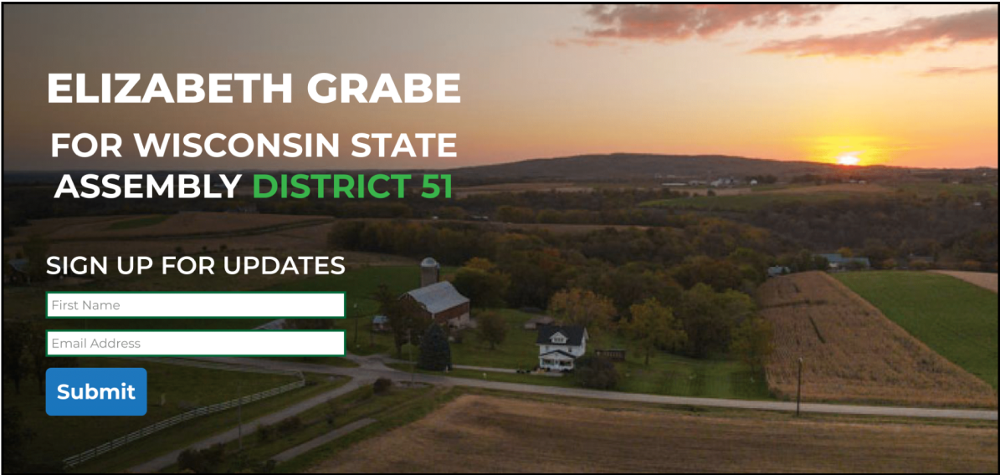
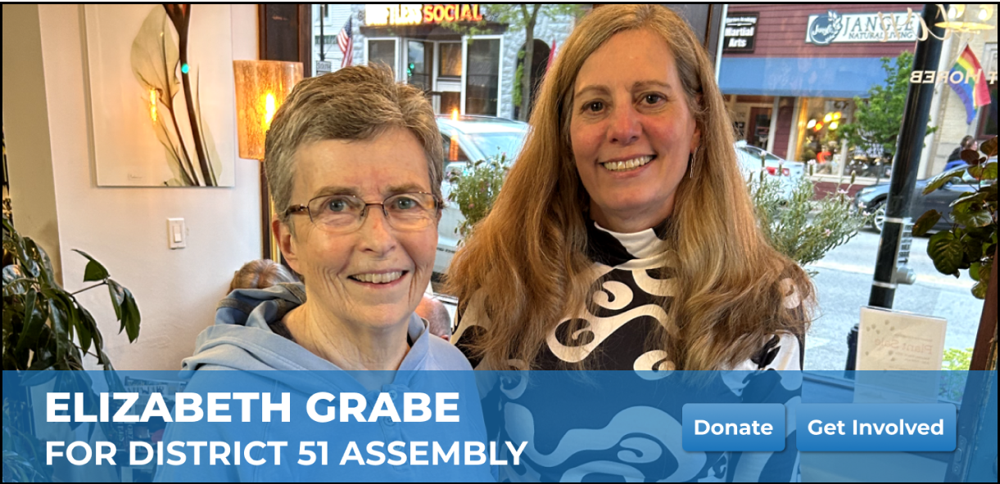
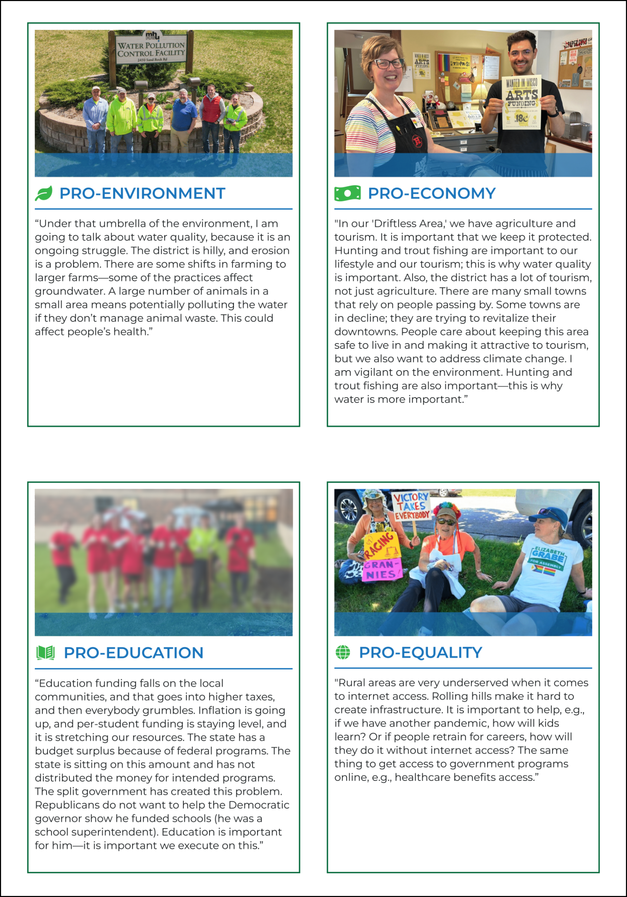

<!DOCTYPE html>
<html lang="en">
  <head>
    <meta name="viewport" content="width=device-width, initial-scale=1" />
    <title>Erin Lauderdale's Portfolio</title>
    <link rel="stylesheet" type="text/css" href="css/new.css" />
    <link rel="preconnect" href="https://fonts.googleapis.com" />
    <link rel="preconnect" href="https://fonts.gstatic.com" crossorigin />
    <link
      href="https://fonts.googleapis.com/css2?family=Josefin+Sans:ital,wght@0,100..700;1,100..700&display=swap"
      rel="stylesheet"
    />
    <link
      href="https://fonts.googleapis.com/css2?family=Afacad+Flux:wght@100..1000&display=swap"
      rel="stylesheet"
    />
    <script defer src="JS/newmenu.js"></script>
    <script defer src="JS/smoothscroll.js"></script>
    <script defer src="JS/csslider.js"></script>
    <script defer src="JS/backtotop.js"></script>
  </head>
</html>
<body>
  <!-- HEADER & MENU
       -------------------------------------------------------------- -->
  <section id="NAV">
    <div class="desktop-header">
      <div class="logo">
        <a href="index.html"></a>
      </div>
      <ul class="menu">
        <li>
          <a href="about.html">
            <h2 class="menu-text">About</h2>
            <div class="menu-item"></div
          ></a>
        </li>

        <li>
          <a href="work.html">
            <h2 class="menu-text">Work</h2>
            <div class="menu-item"></div>
          </a>
        </li>
        <li>
          <a href="contact.html">
            <h2 class="menu-text">Contact</h2>
            <div class="menu-item"></div
          ></a>
        </li>
      </ul>
    </div>

    <div class="mobile-header-cont">
      <div class="mobile-header">
        <div class="logo">
          <a href="index.html"></a>
        </div>
        <div class="hamburger">
          
        </div>
      </div>
      <div class="mobile-menu">
        <div class="mm-item">
          <a href="about.html">
            <h2>About</h2>
          </a>
        </div>

        <div class="mm-item">
          <a href="work.html">
            <h2>Work</h2>
          </a>
        </div>
        <div class="mm-item">
          <a href="contact.html">
            <h2>Contact</h2>
          </a>
        </div>
      </div>
    </div>
  </section>

  <!-- ------- -->
  <div class="page-content">
    <div class="inner-content">
      <div class="mobile-margin">
        <a href="work.html">
          <button class="g-circle-btn">
            </button
        ></a>
      </div>
      <div class="cs-mockups">
        
        
      </div>
      <div class="page-header"></div>
      <div class="mobile-margin">
        <h1>Engaging Voters in Small Town Wisconsin</h1>
      </div>
      <div class="y-box"></div>

      <div class="mobile-margin top-pad">
        <h3 class="p-highlight">
          Website Design: Elizabeth Grabe for District 51
        </h3>

        <div class="content-column justify-center bottom-pad top-pad">
          <h4>Challenge</h4>
          <p>
            Elizabeth Grabe is running for Wisconsin assembly representing
            District 51, a rural area in southwest Wisconsin. My challenge was
            to design an accessible and engaging website to encourage voters
            from the district to understand her positions, donate to her
            campaign, and attend her community events.
          </p>
          <h4>Process</h4>
          <ul>
            <li>
              Researched the communities Elizabeth is campaigning to represent
            </li>
            <li>
              Created a website style guide in line with the campaign’s existing
              branding
            </li>
            <li>
              Created high-fidelity website mockups in Figma to review with the
              campaign
            </li>
            <li>Iterated on designs to align with the campaign’s needs</li>
            <li>
              Passed off my designs to our team’s developer to be built in
              WordPress
            </li>
          </ul>
          <h4>Outcome</h4>
          <p>
            Since launching the site, Elizabeth has received 14 more official
            endorsements. Although we do not yet know the election results, the
            campaign was happy with the final website result and has since seen
            increased turnout at community events. The website has had a
            positive impact on the campaign’s online presence and I eagerly
            await the election outcome!
          </p>
          <div class="content-column center-align">
            <a href="https://grabeforwisconsinassembly.com/" target="_blank">
              <button class="g-btn fit">
                
                View the Website
              </button></a
            >
          </div>
        </div>
        <div class="mobile-spacer">
          <div class="p-circle-sm"></div>
          <div class="p-circle-sm"></div>
          <div class="p-circle-sm"></div>
        </div>

        <div class="content-row justify-even">
          <a href="#INIT">
            <button class="g-btn fit">
              
              Getting Started
            </button></a
          >
          <a href="#DEF">
            <button class="g-btn fit">
              
              Design Process
            </button></a
          >
          <a href="#ITER">
            <button class="g-btn fit">
              
              Iteration
            </button></a
          >
          <a href="#CONC">
            <button class="g-btn fit">
              
              Conclusion
            </button></a
          >
        </div>
      </div>
      <section class="cs-sec" id="INIT">
        <div class="page-header"></div>
        <div class="mobile-margin">
          <h2>Getting Started</h2>
        </div>
        <div class="y-box-cs"></div>
        <div class="content-column mobile-margin">
          <p>
            I got involved with this project through Tech for Campaigns, a
            non-profit that matches technically-skilled individuals with
            democratic candidates to help them with their digital marketing
            strategy. I was placed as a Website Designer to work on Elizabeth
            Grabe’s campaign for Wisconsin’s 51st District Assembly. I worked
            with a Team Lead, Website Developer, and Copywriter to create the
            website over the course of seven weeks.
          </p>
          <div class="content-row top-pad">
            <div class="content-column cs-desc">
              <div class="perm-row center-align">
                
                <h3>Research</h3>
              </div>
              <p>
                I have not lived in or visited the 51st District of Wisconsin,
                so I began the project by researching the area to understand the
                primary users of the website. I looked into the district’s
                demographics, industries, attractions, and popular activities.
                From my research I determined my primary users:
              </p>
              <ul>
                <li>Are mostly white (94%)</li>
                <li>Tend to be older (20% over 65)</li>
                <li>Enjoy outdoor activities such as hunting and fishing</li>
                <li>Live in small towns and rural communities</li>
              </ul>
            </div>
            <div class="content-column cs-desc">
              <div class="perm-row center-align">
                
                <h3>Candidate Briefing</h3>
              </div>
              <p>
                Our team had a zoom session with Elizabeth to better understand
                her needs and wants for the website. She explained her
                motivations for running as well as the recent redistricting of
                district 51- opening up an opportunity to flip the seat for
                democrats. She has web design experience and strong aesthetic
                preferences, which I took detailed notes of to ensure the design
                would meet her needs. Her description of the district lined up
                with the research I had done. From these initial research
                points, I had a clear vision to move forward with my design:
              </p>
              <ul>
                <li>Ensure the website is fully accessible for older users</li>
                <li>Highlight nature and the natural beauty of Wisconsin</li>
                <li>
                  Use the existing campaign color palette of blue, green, and
                  white
                </li>
                <li>
                  Prioritize clean, simple design- no italics or artistic fonts
                </li>
              </ul>
            </div>
          </div>
        </div>
      </section>

      <section class="cs-sec" id="DEF">
        <div class="page-header"></div>
        <div class="mobile-margin">
          <h2>Design Process</h2>
        </div>
        <div class="y-box-cs"></div>
        <!-- SLIDER -->
        <div class="content-column center-align justify-center">
          <div class="cs-slider">
            <div class="cs-slide csslide-1">
              <div class="slider-img">
                
              </div>
              <br />

              <h4 class="p-highlight">Style Guide</h4>
              <p>
                The campaign already had printed marketing materials so it was
                important to maintain brand integrity. I imported the colors
                into my design space, found a suitable font alternative for web
                purposes, and curated an appropriate icon set. I outlined
                spacing guidelines to promote consistency throughout the design
                and used these to begin designing basic web components.
              </p>
            </div>

            <div class="cs-slide csslide-2">
              <div class="slider-img">
                
              </div>
              <br />

              <h4 class="p-highlight">Accessibility</h4>
              <p>
                Each design choice was validated by accessibility checks to
                ensure WCAG compliance. I checked every color combination to
                ensure all text and graphics would have enough contrast. I also
                ensured buttons and links on the mobile design were large enough
                to comfortably press and all fonts were clear and readable.
              </p>
            </div>
            <div class="cs-slide csslide-3">
              <div class="slider-img justify-center center-align">
                
              </div>
              <br />

              <h4 class="p-highlight">Favicon Design</h4>
              <p>
                To highlight the campaign’s identity and individuality, I
                created a custom favicon design based on the campaign logo. I
                used the same colors and hill design that Elizabeth said she
                loved, and the number “51” to represent the district she is
                running in.
              </p>
            </div>

            <div class="cs-slide csslide-4">
              <div class="content-column">
                <div class="content-row">
                  <div class="slider-img">
                    
                  </div>
                  <div class="slider-img">
                    
                  </div>
                </div>
                <div class="content-row">
                  <div class="slider-img">
                    
                  </div>
                  <div class="slider-img">
                    
                  </div>
                </div>
              </div>
              <br />

              <h4 class="p-highlight">Component Design</h4>
              <p>
                Since this website had to be completed quickly and require few
                revisions, I designed modular components that could be easily
                implemented and repeated. Since the campaign wanted to emphasize
                the natural beauty of Wisconsin, I placed most text next to or
                over image highlights. I included a light blue overlay to tie
                the images into the site color palette and create consistency
                throughout the site.
              </p>
            </div>
          </div>
        </div>

        <div class="cs-slider-btns">
          <button class="pslider-btn slider-btn-left">
            
          </button>
          <button class="pslider-btn slider-btn-right">
            
          </button>
        </div>
        <div class="cs-slider-thumbnails center-align justify-center">
          <div class="slider-thumb thumb-1">
            
          </div>
          <div class="slider-thumb thumb-2">
            
          </div>

          <div class="slider-thumb thumb-3">
            
          </div>

          <div class="slider-thumb thumb-4">
            
          </div>
        </div>

        <!-- END SLIDER -->
      </section>
      <section class="cs-sec" id="ITER">
        <div class="page-header"></div>
        <div class="mobile-margin">
          <h2>Iteration</h2>
        </div>
        <div class="y-box-cs"></div>
        <div class="content-column mobile-margin">
          <p>
            As the design was developed, our team met had regular check-ins with
            the campaign to make sure we were meeting expectations. I got
            consistent positive feedback on my designs and made changes as the
            full vision was realized. The changes increased design consistency,
            created easier page navigation, and pushed the design to look
            professional and polished.
          </p>

          <!-- ITERATION HIGHLIGHT -->
          <div class="perm-row center-align top-pad">
            
            <h3>Homepage Hero</h3>
          </div>
          <div class="content-row center-align">
            <div class="content-column cs-desc">
              <div class="cs-img cs-iter">
                
              </div>
              <span class="c">Before</span>
              <p>
                My original idea for the homepage hero was to utilize
                Elizabeth’s drone photography to highlight the natural beauty of
                her farm. I was hoping she would be able to provide some
                overhead drone video, but unfortunately that wasn’t possible due
                to time constraints. I received feedback from the campaign that
                the farm photography was not human enough to connect with
                voters, and that they did not want to immediately ask visitors
                to sign up upon visiting the homepage.
              </p>
            </div>
            <div class="content-column cs-desc">
              <div class="cs-img cs-iter">
                
              </div>
              <span class="c">After</span>
              <p>
                I changed the primary hero image to be a slideshow of photos of
                Elizabeth smiling with voters and volunteers. It projected a
                warmer, more inviting tone as the first impression of the site.
                I changed the “Sign up for updates” form to two buttons-
                “Donate” and “Get Involved”- for users to direct themselves to
                the appropriate forms if they wanted. I added a blue banner to
                the bottom of the images to improve the readability of the
                header text, and to match the styling of the other images on the
                site.
              </p>
            </div>
          </div>

          <!-- END ITERATION HIGHLIGHT -->
          <!-- ITERATION HIGHLIGHT -->
          <div class="perm-row center-align top-pad">
            
            <h3>Priorities Cards</h3>
          </div>
          <div class="content-row">
            <div class="content-column cs-desc">
              <div class="cs-img =">
                
              </div>
              <span class="c">Before</span>
              <p>
                I originally proposed a card style for the priorities page to
                create a clean, modular design. It was one of the first
                components I designed for the site, however, I didn’t end up
                using it anywhere else on the site. The campaign requested that
                I change one of the photos, as well as one of the icons.
              </p>
            </div>
            <div class="content-column cs-desc">
              <div class="cs-img">
                
              </div>
              <span class="c">After</span>
              <p>
                Instead of a single-use component, I decided to switch the
                priorities cards to image highlights. I used this component on
                nearly every other page of the site, so making this change
                increased design consistency. I changed the content as requested
                by the campaign and added text highlights to make the large
                blocks of text easier to navigate.
              </p>
            </div>
          </div>
          <!-- END ITERATION HIGHLIGHT -->
        </div>
        <!-- END ITERATION HIGHLIGHT -->
      </section>
      <section class="cs-sec" id="CONC">
        <div class="page-header"></div>
        <div class="mobile-margin">
          <h2>Conclusion</h2>
        </div>
        <div class="y-box-cs"></div>
        <div class="content-column mobile-margin">
          <div class="content-row center-align">
            <div class="content-column justify-center center-align">
              <div class="cs-img">
                
              </div>
              <button class="g-btn">
                <a href="https://grabeforwisconsinassembly.com/" target="_blank"
                  ><div class="perm-row center-align justify-center">
                    View the Website
                  </div></a
                >
              </button>
            </div>
            <div class="content-column cs-desc">
              <div class="perm-row center-align">
                
                <h3>Results</h3>
              </div>
              <p>
                Our developer did an amazing job translating my designs to the
                web and the campaign has reported positive engagement from the
                site. Notable accomplishments since launching the site include:
              </p>
              <ul>
                <li>14 new official endorsements.</li>
                <li>Increased turnout at community events.</li>
                <li>Increased volunteer sign-ups and campaign donations.</li>
              </ul>
            </div>
          </div>

          <div class="perm-row center-align">
            
            <h3>Final Thoughts</h3>
          </div>

          <p>
            I felt intimidated working on this project because my team members
            all had significantly more tech industry experience than me. This
            website has the opportunity to make a big impact in an important
            election year, and I’m proud to have been part of the team that put
            it together. Overall, I am extremely happy with the results and the
            abilities I showed throughout this project. I felt I did a good job
            listening to the candidate’s needs and wants and implemented them on
            schedule. If I had time to continue refining the design, I would:
          </p>
          <ul>
            <li>
              Perform user testing on users similar to Elizabeth’s target
              demographic to look for any pain points
            </li>
            <li>Update photos with new images from recent campaign events</li>
            <li>
              Optimize the design for tablet (currently optimized for desktop
              and mobile)
            </li>
          </ul>
          <p>
            I was able to communicate effectively with my team to produce a
            cohesive, attractive, and most importantly, accessible website that
            the client is happy with. We were successful in our goals and I hope
            Elizabeth’s team is successful come the election!
          </p>
        </div>
        <div class="return hidden">
          <a href="#NAV">
            <button class="g-circle-btn">
              </button
          ></a>
        </div>
      </section>
      <div class="content-column justify-center center-align bottom-pad">
        <div class="cta-end">
          <div class="content-column justify-center center-align">
            <h4>Like what you see?</h4>
            <button class="g-btn">
              <a href="contact.html"> Contact me! </a>
            </button>
          </div>
        </div>
      </div>
    </div>
  </div>
</body>
